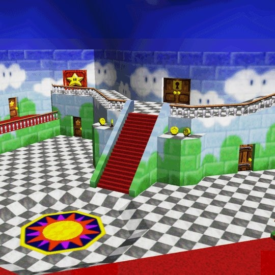

SCENE
HTML5 is not supported in your browser.
Your browser does not support the audio element.
Select Scene
Bomb-omb
Peach Castle

Bowser to the sky
Settings
Touch Keyboard
W
A
S
D
▲
◀︎
▼
▶︎
Q
E
R
CONTROLS
W
Forward
S
Back
A
Left
D
Right
Q
Up
E
Down
▲
Rotate up
▼
Rotate down
◀︎
Rotate left
▶︎
Rotate right
R
Reset
Christian Galeone